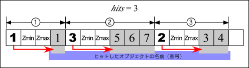
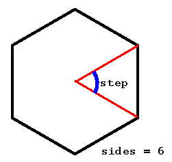
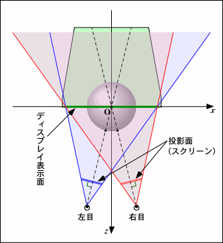
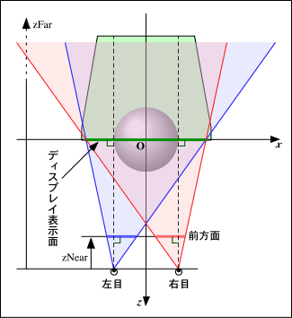
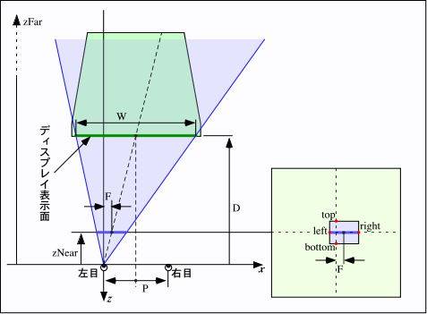

マウスを使ってオブジェクトを選択するには？
セレクションを使えば， マウス（あるいはスクリーン上の領域） がどのオブジェクトを指して（含んで） いるのかを調べることができます．
glRenderMode(GL_SELECT) を実行してセレクションモードに入ると， オブジェクトを描画してもスクリーンには表示されなくなります． その代わり，オブジェクトの描画の際に名前（実は整数値）を付けておくと， （実際には表示されない）描画処理によって視体積内にあると判断された オブジェクトの名前が glSelectBuffer() で指定した配列に格納されます．
したがって， 表示領域をマウスてクリックした点の周囲に限定して描画処理を行えば， その領域に（一部でも）描画されたオブジェクトを選択できます． このような表示領域を設定するには gluPickMatrix() が使えます．
以前，ここで大嘘書いてました．ごめんなさい． お詫びにサンプル作りました．
sonson@Pictures&Software - OpenGL - applied で具体的に説明なさっていますが，一応以下にも手順の概略を書いてみます． とりあえず一旦，画面にオブジェクト（図形）を全部書きます． その後，以下の手順でクリックされたオブジェクトを見つけます．
glSerectBuffer() の引数に指定した（一次元）配列 buffer には， 次のような順序でデータが格納されています．

アニメーション版は， ワンクリックで複数のオブジェクトがセレクトできることを実感できます．
マウスでクリックした場所の３次元位置を求めるには？
gluUnProject() という関数を使います．
GLint gluUnProject( GLdouble winX,
GLdouble winY,
GLdouble winZ,
const GLdouble *model,
const GLdouble *proj,
const GLint *view,
GLdouble* objX,
GLdouble* objY,
GLdouble* objZ )
winX, winY はスクリーン上の点， すなわちマウスポインタの位置になります． winZ はその点の奥行きですが， セレクション を使った場合はセレクションバッファに入っている値が使えます （セレクションバッファに入っている値は GLuint 型なので， gluUnProject() で使う場合は GLuint 型の最大値 0xffffffff で割る必要があります ［OpenGL Mailing List の寺西さんのコメント］． 他に glReadPixels() を使って GL_DEPTH_COMPONENT すなわち Z バッファからデータを読んだり， 適当な値を設定しておいてスクリーン空間中の視点と (objX, objY, objZ) を通る直線を求め， それとオブジェクトの交点を求めるなどの方法で得ることができると思います．
model, proj はそれぞれ GL_MODELVIEW, GL_PROJECTION マトリクスが格納されている 4x4 の配列で， view はビューポートが格納されている 4 要素の配列です． model, proj は以下の手順で得られます（うう，マウス座標の上下を反転するのを忘れていた…）．
int wh; /* 開いたウィンドウの高さ */
void resize(int w, int h)
{
/* ウィンドウ全体をビューポートにする */
glViewport(0, 0, w, wh = h);
...
}
void mouse(int button, int state, int x, int y)
{
if (button == GLUT_LEFT_BUTTON && state == GLUT_DOWN) {
GLdouble model[16], proj[16];
GLint view[4];
GLfloat z;
GLdouble ox, oy, oz;
glGetDoublev(GL_MODELVIEW_MATRIX, model);
glGetDoublev(GL_PROJECTION_MATRIX, proj);
glGetIntegerv(GL_VIEWPORT, view);
glReadPixels(x, wh - y, 1, 1, GL_DEPTH_COMPONENT, GL_FLOAT, &z);
gluUnProject(x, wh - y, z, model, proj, view, &ox, &oy, &oz);
/* ox, oy, oz にクリックしたところの３次元位置が入る */
}
...
}
透視変換の場合にウィンドウをリサイズしたとき表示図形の大きさが変らないようにするには？
gluPerspective() の代りに glFrustum() を使ってみてください．
void glFrustum( GLdouble left,
GLdouble right,
GLdouble bottom,
GLdouble top,
GLdouble zNear,
GLdouble zFar )
平行投影を設定する glOrtho() に対して，glFrustum() は透視投影の設定を行います． gluPerspective() はカメラ的なパラメータを使って glFrustum() を設定できるようにしたユーティリティライブラリ関数です．
glFrustum() の引数は glOrtho() に準じていて， left, right, top, bottom, near, far の６つを指定します． left, right, top, bottom はシーンを投影するスクリーンの大きさで， near, far がそれぞれ前方面および後方面の位置であると言うところまでは glOrtho() と同じですが，glFrustum() の場合はスクリーンが前方面であるというところがミソです．
視点は原点にあるため， 視点と前方面，すなわちスクリーンとの距離 near は，カメラの焦点距離に相当します．したがってスクリーンの大きさに比べて near が大きいほど望遠になります．
ウィンドウをリサイズしたときに表示図形の大きさが変らないようにする考え方は glOrtho() と同じで，ウィンドウのサイズに比例して left, right, top, bottom を設定します．
例えばもともとのサイズが WIDTH×HEIGHT のウィンドウに，アスペクト比 ASPECT，画角 FOVY で表示されている図形の大きさを， 幅 w，高さ h にリサイズしたときも変化しないようにするには， 次のように設定してみてください．
ここでも以前でたらめ書いてました．ごめんなさい．
void resize(int w, int h)
{
double scale = NEAR * tan(FOVY * 0.5 * 3.1415926536 / 180.0);
double x = w * scale * ASPECT / WIDTH;
double y = h * scale / HEIGHT;
glFrustum(-x, x, -y, y, NEAR, FAR);
glViewport(0, 0, w, h);
...
}
IsoTrak や SuperGlobe からデータを取ると，表示がぎこちなくなるのですが？
実験項目で示したサンプルでは， IsoTrak や SuperGlobe から“単一モード”でデータを取得しています． “単一モード”では， コンピュータからデータを取り出す命令（コマンド）を送り， それに IsoTrak や SuperGlobe が応答して一つ分のデータを送ってきます．
このため，データが必要になってから単一モードでデータを取得しようとすると， データが得られるまでの間にちょっと時間がかかってしまいます． アニメーションを行っている場合， 各フレームの画像を生成するたびにデータの取得を行うと， この時間のために画面表示がぎこちなくなってしまいます．
これを避けるためには， “連続モード”を使って常に最新のデータを継続的に取得するようにします．
しかし，そのためには IsoTrak や SuperGlobe からのデータの受取りを， 画像生成などの本来の作業と非同期に（並行して）行う必要があります．
これにはいくつかの方法があります． ひとつの方法は，データの取り出し専用のプログラムを別に作り， 共有メモリ機能などを用いて， 取り出されたデータを画像生成を行うプログラムから参照できるようにします． また，スレッドという機能を使えば， 一つのプログラム内で，プログラムの各部分を非同期に動作させることができます．
下の例では，最初に startIsoTrak() / startSuperGlobe() を呼び出すことで，スレッドを生成して非同期にデータを取り出します． この引数は tty デバイス名（"/dev/ttyf1" 等）で， 戻り値は読み出しスレッドの id です． getIsoTrak(id, 0, pos) / getSuperGlobe(id, pos) で， 取り出したデータを引数に指定した配列 pos にコピーします． プログラムの終了時に stopIsoTrak(id) / stopSuperGlobe(id) を呼び出してください．
あと，スレッドを使う場合は，コンパイルの時に -lpthread オプションを追加してください． ……と，ところがどっこい，実験で使っている Indy には， スレッドライブラリをインストールし忘れたので， 実は以下のプログラムは実験用の Indy ではコンパイルできない （他のマシンでは一応試した）んだなこれが． わはははは．あ〜あ．
視点を移動するのではなく，物体をぐるぐる回す方法は？
GLUT 付属のサンプルプログラムに含まれる dinospin が，まさにそれを実現しています．このプログラムは dinospin.c および trackball.c, trackball.h という３つのソースファイルからなり，回転はこのうちの trackball.c で実現しています．これを参考にしてください． なお，こういう回転はクォータニオンで表現すれば取り扱いが容易になります． クォータニオンについては， 宇治社中 〜3D Coding Tips〜 のページが参考になります．
dinospin では本格的なトラックボールを実現していますが， ここでは例によって手抜きの実装を考えてみます （ということで，この方法ではあんまり「思った通り」に回転できません→ 多少は意図した通りに回せるようにする説明がこのあたりにあります）．
任意の軸を中心とした回転は，glRotated() で与えることができます．下の例では，図形の原点を通り (ax, ay, az) の方向を向いた軸を中心に angle 度だけ図形を回転します．
/* 回転軸 */ GLdouble ax, ay, az; /* 回転角 */ GLdouble angle; ... void display(void) { ... glPushMatrix(); /* 回転 */ glRotated(angle, ax, ay, az); /* 図形の描画 */ glBegin(...); ... glEnd(); glPopMatrix(); ... }
マウスの移動によってこの angle と (ax, ay, az) を指定するようにすれば，目的は果たせそうです．話を簡単にするために，マウスは XY 平面上を動かすものとします．すなわち回転軸は常に XY 平面上 (az = 0) にあり，視線は Z 軸上にあるものとします （こうすると視線を Z 軸上以外に移動したときに思い通りに回転できなくなりますが… ※）．
マウスをドラッグしている間， マウスポインタの移動にしたがって物体を回転させるのですから， その間マウスの移動方向と移動量を検出する必要があります． そこで，まずマウスボタンを押したときに， その位置（ドラッグ開始点）とその時の回転角を記録します．
/* ドラッグ開始位置 */
int cx, cy;
/* ドラッグ開始位置での回転角 */
double ca;
...
void mouse(int button, int state, int x, int y)
{
switch (state) {
case GLUT_DOWN:
/* マウスボタンを押した位置を記録 */
cx = x;
cy = y;
/* 表示している物体の回転角を記録 */
ca = angle;
break;
default:
break;
}
}
次にマウスをドラッグしたときに， 現在のマウスポインタの位置のドラッグ開始点からの変位を調べ， それをもとに回転軸ベクトルや回転角を求めます （この方法ではドラッグ開始点付近での挙動が不安定になります． これを避けるには，移動中のマウスの速度と方向を連続的に求めて， そこから回転軸ベクトルや回転角を求める必要があります）．
その際，回転量がウィンドウのサイズに依存しないように， マウスポインタの変位を ウィンドウ内の相対的な位置にしておいたほうがいいかも知れません． このためにウィンドウのサイズからスケールファクタ sx, sy を求めておきます．定数 SCALE はマウスポインタの位置から回転角への換算に用います． これが 360.0 なら， マウスポインタをウィンドウの幅（あるいは高さ）分移動したときに， 物体をちょうど一回転させることができます．
物体を回転させる回転軸と回転角が決まったら， 図形を再描画します．
/* マウス移動量のスケールファクタ */ double sx, sy; #define SCALE 360.0 ... void resize(int w, int h) { /* マウスポインタ位置のウィンドウ内の相対的位置への換算用 */ sx = 1.0 / (double)w; sy = 1.0 / (double)h; ... } ... void motion(int x, int y) { double dx, dy, a; /* マウスポインタの位置のドラッグ開始位置からの変位 */ dx = (x - cx) * sx; dy = (y - cy) * sy; /* マウスポインタの位置のドラッグ開始位置からの距離 */ a = sqrt(dx * dx + dy * dy); if (a != 0.0) { /* 距離を角度に換算してドラッグ開始時の回転角に加算 */ angle = fmod(ca + SCALE * a, 360.0); /* マウスポインタの変位から回転軸ベクトルを求める */ ax = dy / a; ay = dx / a; az = 0.0; /* 図形の再描画 */ glutPostRedisplay(); } }
上の例では，az は常に 0 ですから，定数にしてしまって構わないでしょう． あと，マウスのドラッグする度に図形を再描画すると， マウスの応答が悪くなるかも知れません． その場合はマウスのボタンを押した時点でアニメーションを開始し 離した時点でアニメーションを終了させるようにして， マウスのドラッグによる回転軸や回転角の計算と図形の再描画を 非同期に行うようにした方がいいでしょう．
回転を視点座標系で行うようにすれば，視線が Z 軸上以外の場所にあっても思い通りに回転できます． ただし，これは空間全体の回転（あるいは視点の回転）になります． このとき光源の位置を gluLookAt() より後で設定すると光源も一緒に回転するので， これが嫌なら光源の位置も視点座標系で設定してください．
あと，おまけです．
円柱はどうやって描くんですか？
確かに，GLUT には球や円錐はあっても， なぜか円柱を描く関数は用意されてませんよね． でも，この程度なら自分で書いても， 大した手間じゃない気がするんですが…宿題にしたらいけませんか？
一応説明を考えてみます． まず，円柱を「上面」「側面」「下面」の部分に別けます． 「上面」と「下面」はともに単なる円（というか，正多角形）なので， 例えば「上面」は次のような手続きで描くことができます．
#include <math.h> ... double step = PI2 / (double)sides; int i; ... /* 上面 */ glNormal3d(0.0, 1.0, 0.0); glBegin(GL_POLYGON); for(i = 0; i < sides; i++) { double t = step * (double)i; glVertex3d(radius * sin(t), height, radius * cos(t)); } glEnd();
変数 height は円柱の長さ，radius は円柱の半径， sides は円柱の側面の数（＝上面の辺の数）です． また記号定数 PI2 は“２π”です． したがって step には１辺あたりの中心角が代入されます．

結局，sin/cos を使って円を描くのと同じです． 「下面」も同様ですが，面の向きが「上面」と反対になるので， 頂点をたどる順番を「上面」に対して逆順にします．
/* 下面 */
glNormal3d(0.0, -1.0, 0.0);
glBegin(GL_POLYGON);
for(i = sides; --i >= 0; ) {
double t = step * (double)i;
glVertex3d(radius * sin(t), 0.0, radius * cos(t));
}
glEnd();
側面は円周上に長方形を並べることで描くことができます． この時，長方形の各頂点における法線ベクトルを， 円柱の中心軸からその点までの方向ベクトルにしてやります． こうすることでスムースシェーディングが施され， 滑らかな側面が表示されます．
/* 側面 */
glBegin(GL_QUAD_STRIP);
for (i = 0; i <= sides; i++) {
double t = step * (double)i;
double x = sin(t);
double z = cos(t);
glNormal3d(x, 0.0, z);
glVertex3f(radius * x, height, radius * z);
glVertex3f(radius * x, 0.0, radius * z);
}
glEnd();
sin/cos を何回も計算しているのが気になりますけど， そういうところに突っ込みたい人は自分で工夫してください．
実は GLU ライブラリの中に，gluCylinder() という関数が用意されています． これは円柱の側面だけを描く関数なので， これと円盤を描く gluDisk() を組み合わせて円柱を描くことができます．
なお gluDisk() という関数は， 真ん中に穴をあけることができるので， パイプみたいなものもわりと簡単に描くことができます．
glFrustum() を使って正確な立体視を行う方法は？
実験部分で「gluLookAt() を使わずに， gluPerspective() を glFrustum() に置き換えて視野をずらしたほうが厳密」などと書いていますが， 実際どういう事なのか説明します．
gluLookAt() を使って視差を付けると， 視線（視点と目標点と結ぶ線）の方向が少し回転してしまいます． この状態で視線と垂直な投影面（前方面というわけではありません） に投影された図形が，ディスプレイに表示されます．

しかし，ディスプレイの表示面は視線に対して垂直ではありませんから， 投影面に投影された図形をそのままディスプレイに表示すると， 少しずれが生じます． 両目はともにディスプレイを少し斜めから見ていますから， 図形はその分だけ横長に表示する必要があります．
このずれはわずかなので，ほとんどの場合あまり気になることはありません． しかし，立体感を強調しようとして物体を視点に近づけた場合などに， 思うように立体感が得られないということが起こります．
glFrustum() は視線を回転させずに投影面をずらす事ができるため， このずれを生じさせずに視差を与える事ができます．

いま，左目とディスプレイとの距離を D， 視差（両目の間隔）を P とします． このとき glFrustum() で指定する表示領域の中心の， 左目の視線からのずれ F は，次式で求められます．
F = P × 0.5 × zNear ／ D

またディスプレイ表示面の幅を W，高さを H とすれば （アスペクト比は１とします）， 表示領域の幅は W × zNear ／ D，高さは H × zNear ／ D となりますから，glFrustum() で指定する表示領域は次のようになります． 右目の場合は P または F の符号を反転するだけです．
left = (-W + P) × 0.5 × zNear ／ D = -W × 0.5 × zNear ／ D + F right = (W + P) × 0.5 × zNear ／ D = W × 0.5 × zNear ／ D + F bottom = -H × 0.5 × zNear ／ D top = H × 0.5 × zNear ／ D
そして，左右の目を，それらの本来の位置に置いてレンダリングします． これは，実際にはシーンの方を移動します．上図の場合では， 左目についてはシーン全体を (P ／ 2, 0, -D) だけ並行移動してから描画し， 右目についてはシーン全体を (-P ／ 2, 0, -D) だけ並行移動してから描画します．
GLdouble k = 0.5 * zNear / D; GLdouble f = P * k; GLdouble w = W * k; GLdouble h = H * k; /* 右目の画像 */ glDrawBuffer(GL_BACK_RIGHT); glClear(GL_COLOR_BUFFER_BIT | GL_DEPTH_BUFFER_BIT); glMatrixMode(GL_PROJECTION); glLoadIdentity(); glFrustum(-w - f, w - f, -h, h, zNear, zFar); glMatrixMode(GL_MODELVIEW); glLoadIdentity(); /* 光源の位置等の設定 */ ... glTranslated(-P * 0.5, 0.0, -D); /* 視点の位置等の設定 */ ... /* シーンの描画 */ ... /* 左目の画像 */ glDrawBuffer(GL_BACK_LEFT); glClear(GL_COLOR_BUFFER_BIT | GL_DEPTH_BUFFER_BIT); glMatrixMode(GL_PROJECTION); glLoadIdentity(); glFrustum(-w + f, w + f, -h, h, zNear, zFar); glMatrixMode(GL_MODELVIEW); glLoadIdentity(); /* 光源の位置等の設定 */ ... glTranslated(P * 0.5, 0.0, -D); /* 視点の位置等の設定 */ ... /* シーンの描画 */ ...